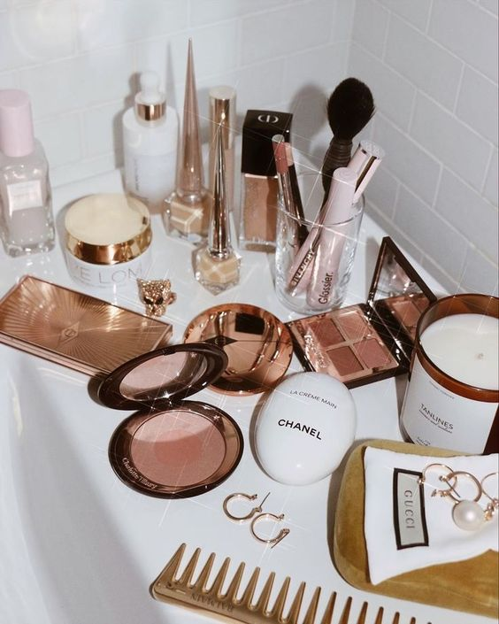
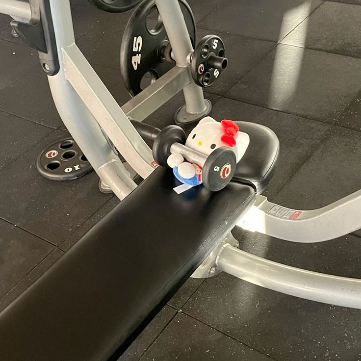
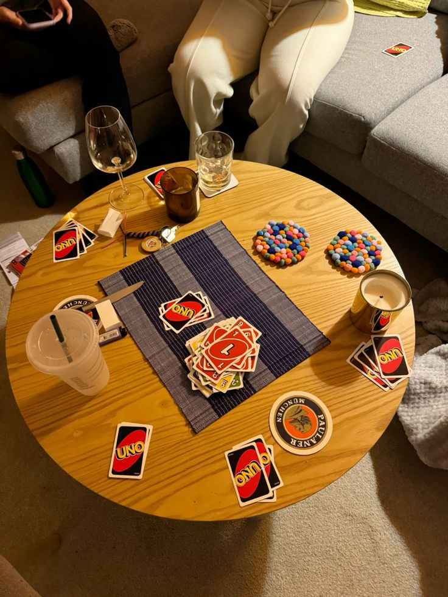

Hola, soy Ximena Zelaya. Estoy estudiando Ingeniería de Software en la ESEN, en El Salvador. Me apasiona la tecnología, pero tengo muchos otros intereses que me llenan de energía. Me encanta ir al gimnasio, jugar volleyball, y disfrutar del tiempo con mi novio. Soy fan de la música, especialmente de Taylor Swift y Olivia Rodrigo, cuyas canciones no faltan en mi lista de reproducción. Amo ver películas y series para desconectar un poco y relajarme. Además, me gusta mucho viajar, explorar nuevos lugares, y conocer diferentes culturas. Soy una gran amante del maquillaje y la moda; me divierto experimentando con nuevos looks y estilos. También valoro muchísimo el tiempo que paso con mi familia, mis papás y mi hermana, que siempre son mi mayor apoyo.
Desde que era pequeña, he sido una gran fan de Taylor Swift. Recuerdo cómo me emocionaba cada vez que pasaban sus videoclips en Nickelodeon; esas canciones marcaron muchos momentos de mi infancia. Con el tiempo, mi admiración por ella solo ha crecido. Tuve la suerte de asistir a su gira de Lover, una experiencia inolvidable que reafirmó mi amor por su música. Aunque todos sus álbumes, desde su debut Taylor Swift hasta los recientes Folklore y Evermore, me encantan, mis favoritos son Reputation y Folklore. Me fascina cómo ha evolucionado a lo largo de los años con discos tan variados como Fearless, Speak Now, Red, 1989, y Lover, y cómo ha encontrado nuevas formas de conectar con sus fans a través de sus regrabaciones de Fearless (Taylor’s Version) y Red (Taylor’s Version). Hay algo especial en cada canción, pero “Tolerate It” y “My Tears Ricochet” ocupan un lugar muy especial en mi corazón. Amo su capacidad para contar historias a través de sus letras, y sueño con poder asistir al The Eras Tour algún día y, por supuesto, conocerla en persona. Sería un sueño hecho realidad.
Me encanta mantenerme activa y disfrutar de diversas actividades que me llenan de energía y alegría. Ir al gimnasio se ha convertido en una de mis rutinas favoritas, ya que no solo me ayuda a mantenerme en forma, sino que también me brinda un espacio para desconectar y enfocarme en mí misma. También disfruto mucho jugando volleyball, especialmente con amigos; es una forma perfecta de combinar ejercicio con diversión y espíritu de equipo. Además, me apasiona la moda y el maquillaje; me encanta experimentar con nuevos looks y tendencias, encontrando siempre formas creativas de expresar mi estilo personal. Otro de mis grandes intereses es viajar. Adoro explorar nuevos lugares, conocer diferentes culturas, y descubrir la belleza única de cada destino. Cuando no estoy viajando, me gusta disfrutar de una buena película o una serie, especialmente las de misterio y ciencia ficción. La música es otra gran pasión en mi vida; soy fan de Taylor Swift, especialmente de sus canciones como “Tolerate It” y “My Tears Ricochet”. Siempre encuentro consuelo e inspiración en sus letras. Me encanta compartir momentos con mis amigos y mi familia, ya sea saliendo a algún lugar nuevo o simplemente pasando una tarde tranquila juntos.
  